“We all have an energy inside of us and it ́s cathartic to see someone successfully getting it out.” My current work consists of drawings, paintings, and prints on paper and wood panels in various formats. A mix of acrylic paint, ink, and color pencils in typically vibrant and fluorescent colors is applied in a gestural translucent way to create a universe of abstract structures, shapes, and personal symbolism. The work is developed in layers. Various drawing and painting media are directly applied in a spontaneous flow.Bold brushstrokes intertwine with delicate mark making to create an energetic atmosphere ranging from fun to poetic. This visual universe translates to my strong belief that artists are superheroes. No matter their race, culture or backgrounds they do superordinary things and create extraordinary worlds. Through their powers they inspire and give courage to people to be alive. It is possible for anyone! My mission, as an artist and superhero, is to spread my message and a ton of superhero capes to people around the world – so they can feel and believe for themselves that we are all superheroes!
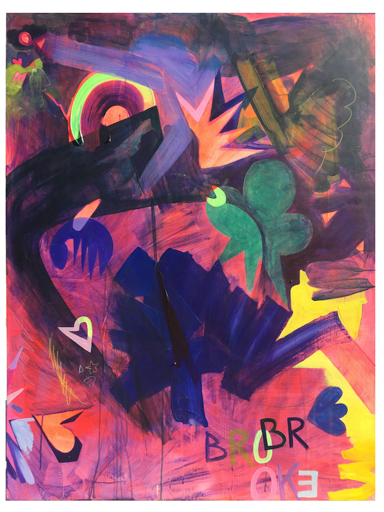
brooke acrylic on wood panel, 122,5 * 93,5 cm, 2016
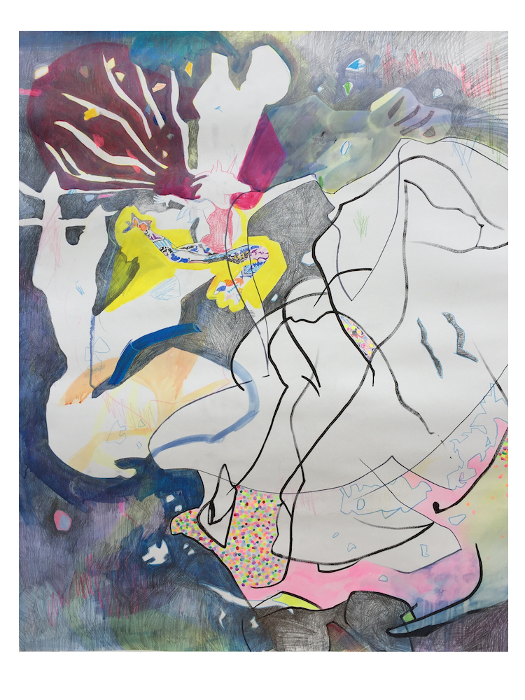
unicorn universe I ink, acrylic, crayon and pencil on paper, 121 * 101 cm, 2016
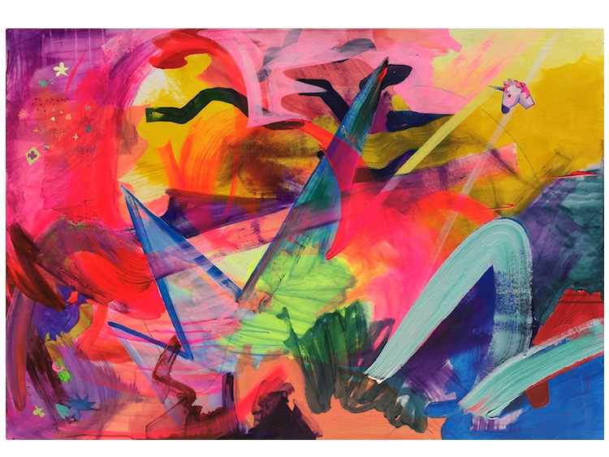
unicorn universe II acrylic on wood panel, 85 * 122,5 cm, 2016
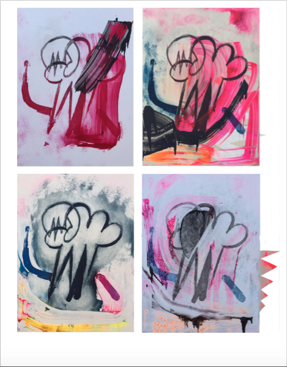
shapes that look like hearts falling in love with stars (variations) sugarlift etching and monotype print, 65 * 45 cm, 2016
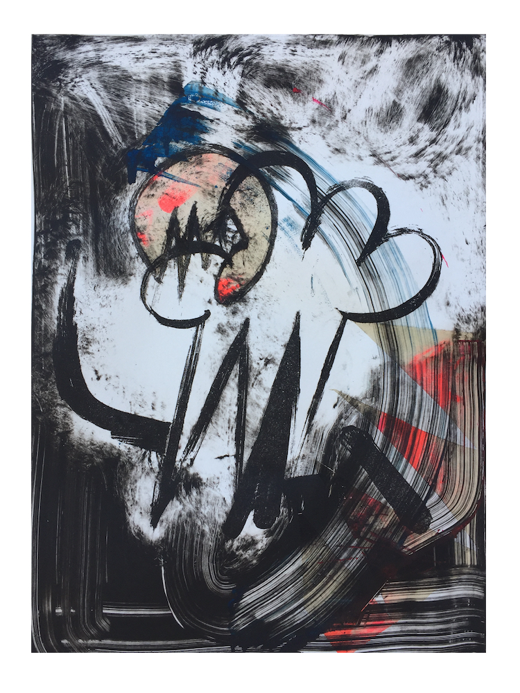
shapes that look like hearts falling in love with stars (variation) sugarlift etching and monotype print, 65 * 45 cm, 2016
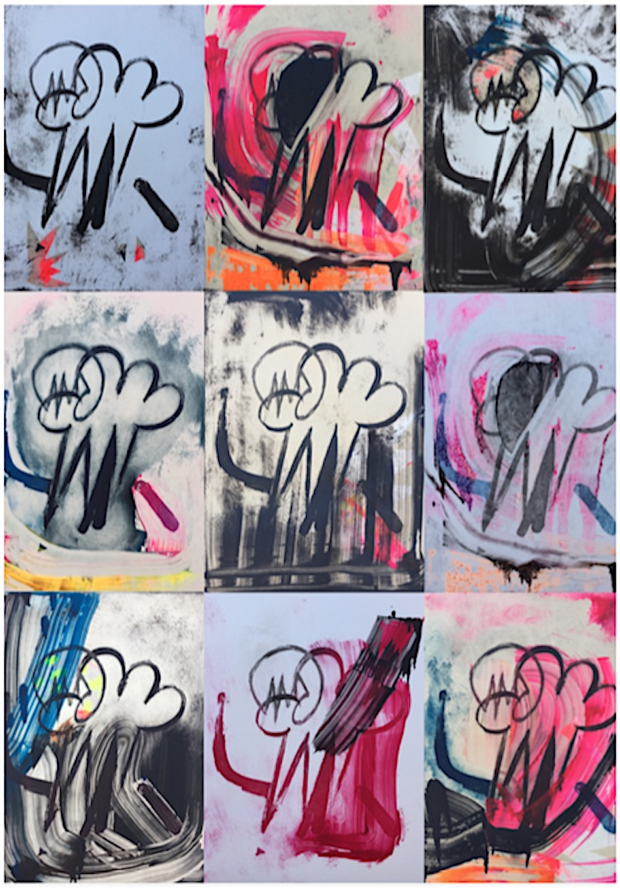
shapes that look like hearts falling in love with stars (variations) sugarlift etching and monotype print, 65 * 45 cm, 2016
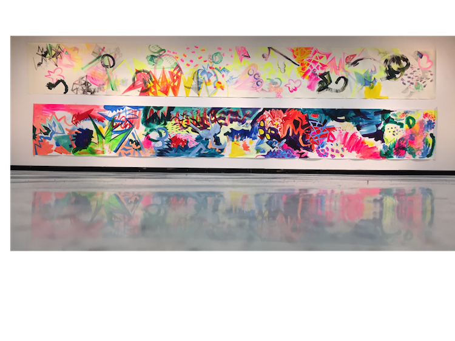
abstract narrative acrylic and pencil on paper, 213 * 735 cm, 2016
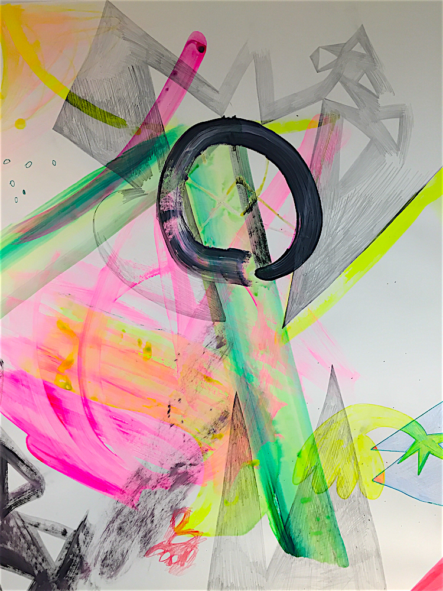
abstract narrative detail
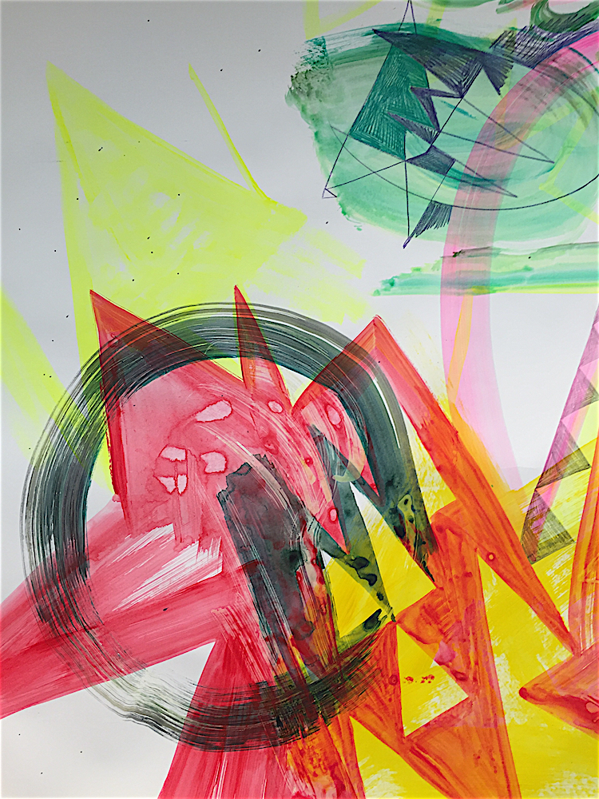
abstract narrative detail
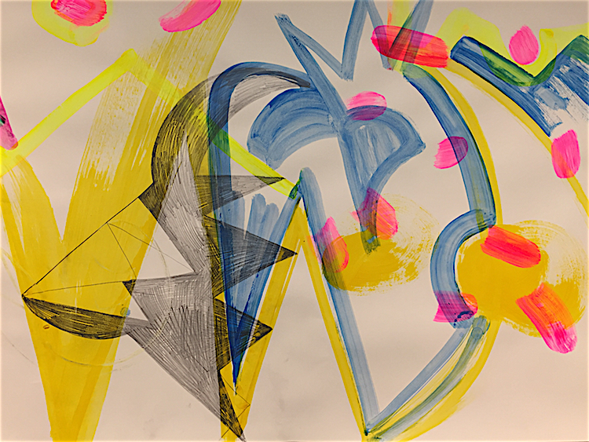
abstract narrative detail
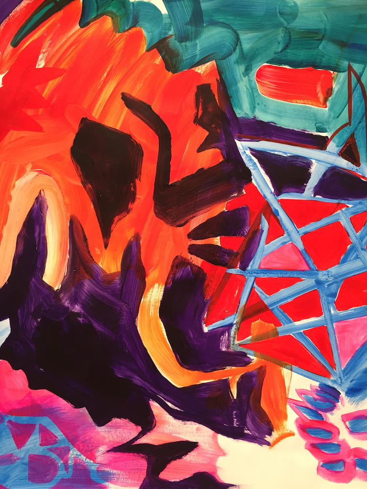
abstract narrative detail
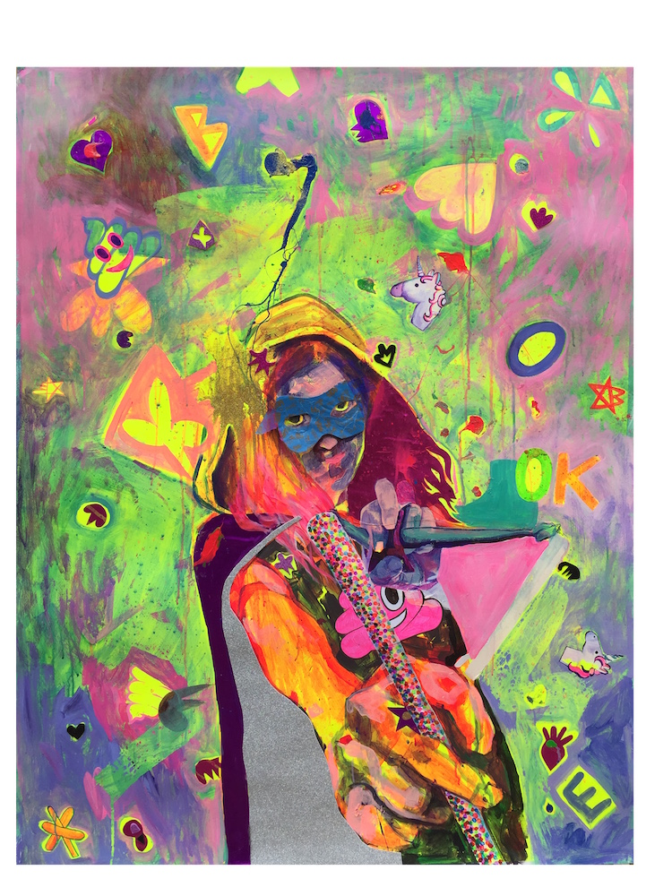
shitgirl acrylic, glitter cloth, sharpie and masking tape on paper, 122 * 93 cm, 2016
lives and works in Berlin 2016 // California State University Long Beach USA as Arnold Heidsieck-scholar ZEIT Stiftung Ebelin Gerd Bucerius and American Friends of Bucerius 2014 - DATO // Arts, media and economic science, Carl von Ossietzky University Oldenburg GE 2012 // BFA Academy of Fine Arts Maastricht NL 2011 // Faculdade de Belas Artes de Lisboa PT
2017 // Upcoming: unicorn universe Kunstmuseum Ratingen (solo show) opening: 10.Juni
2016 // There ́s more to the picture University Oldenburg (group show)
2016 // Ink 17: Turf Marilyn Werby Gallery, Long Beach, USA (group show)
2015 // Kulturcafé Poylester, Oldenburg (group show)
2015 // Die Lichtenberg Norm Galerie Zwitschermaschine, Berlin (group show)
2015 // Showtime Lecture Performance and Semester Showcase, Universität Oldenburg (group show)
2014 // Exhibition and auction Kunstverein Bahner e.V., Schloß Neuenburg, Neuenburg (group show)
2014 // Exhibition Atelier Rudolfstraße, Berlin (group show)
2014 // Anonymous Drawings 2014 – Based in Berlin, Pavillion am Milchhof, Berlin (group show)
2013 // The Enchanted Wood Artwood Studio, Tønsberg, NO (group show)
2013 // Dreamworlds Schillerpalais, Berlin (group show)
2013 // Neverland HEDAH, Maastricht, NL (group show)
2013 // Macht Kunst Deutsche Bank Kunsthalle, Berlin (group show)
2013 // Nora Roggausch – Drawing and Painting Kurhaus Dangast, Dangast (solo show)
2012 // Dossier 18.103 Final Exhibition ABK Maastricht, NL (group show)
2011 // Straight from the Artist´s Studio - Sound Performance Intro in Situ, Maastricht (group show)
2011 // Nora Schwan – Exhibition Project Space ABK Maastricht (solo show)
2015 // 41 brieven van de jonge kunstenaar, Roos van den Oetelaar and Renee Verberne, Ijzer
(Forty-one letters from the young artist)
2013 // Traumwelten zeitgenössischer Künstlerinnen und Künstler Publikation anlässlich der Ausstellung Traumwelten
(Dream worlds of contemporary artists, publication on the occasion of the exhibition dream worlds)
2012 // Dossier 18.108 Abschlusspublikation ABK Maastricht
(graduation publication)
noraroggausch@gmail.com
© Nora Roggausch 2017
All rights reserved.